Sample Results
| Denominator Image | Initial Normal | Refined Normal | 3D Model | Textured 3D Model |
 |
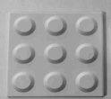 | 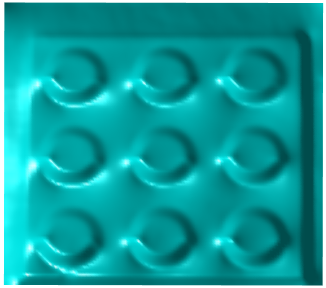 |  |
|
| 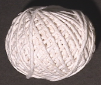 | 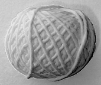 | 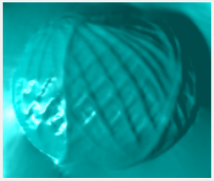 | 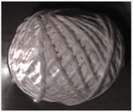 | |
| 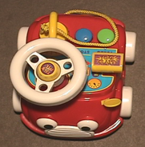 | 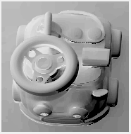 | 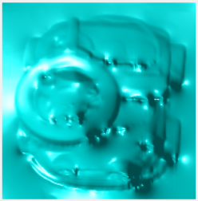 | 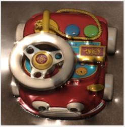 | |
| 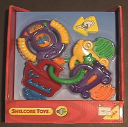 | 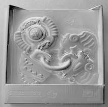 | 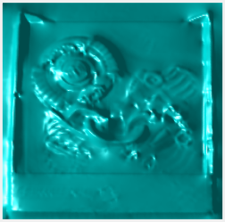 | 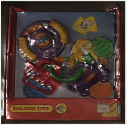 | |
| 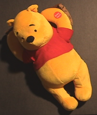 | 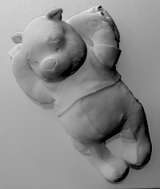 |  |
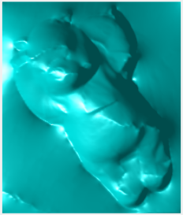 | 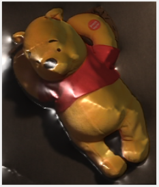 |
In this project we implement photometric stereo reconstruction.
The reconstructed object is observed by a fixed camera under different illumination. So we have a dense set of images to start with. The challenge is to infer a 2.5D surface description of the object (that is, a depth model), despite that the captured data are severely contaminated by shadows, highlights, transparency and that the light calibration is inaccurate. The steps of the project are:
I. Uniform Resampling
The noisy data we have corresponds to an unevenly scattered set on the light direction sphere, which will produce undesirable biases to the result. To produce uniform sampling of light directions, we start with an icosahedron, and perform subdivision on each face 4 times recursively. It produces a total of 1313 points uniformly sampled on the light direction sphere.
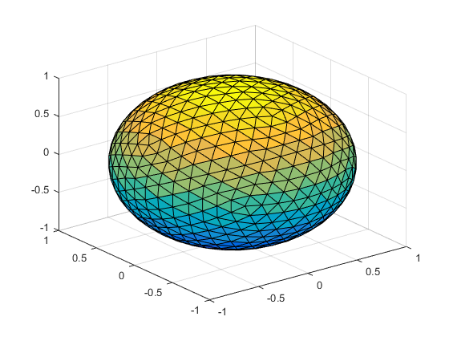
Suppose the object is located at the center of the light direction sphere. Ideally, we want to illuminate the object along the line joining the center and one of the vertices of the subdivided icosahedron, such that uniform distribution can be achieved. In practice, we seek the nearest light direction Lo at one vertex in the subdivided icosahedron for each captured light direction Li, and interpolate the image Io at Lo by
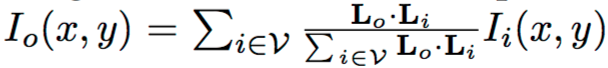
where V is a set of indices to the captured light direction closest to Lo. Uniform resampling is thus achieved.
II. Find Denominator Image
Complex objects contain textures and spatially varying albedos. By adopting a simple model, we choose an image that is shadow & highlight free to cancel out the surface albedo by producing ratio images.
An example is given below.
| Image | Denominator Image |
| 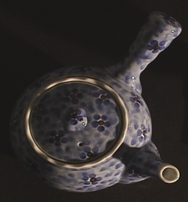 | 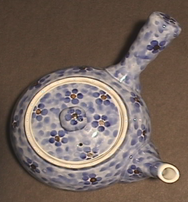 |
III. Local Normal Estimation
After uniform resampling and obtaining a denominator image, we are ready to produce an initial normal for each pixel, which is needed for defining our energy functions.
Every pixel in an ratio image is expressed by
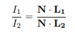
Define N = (x, y, z)T ,L1 = (l1x, l1y, l1z)T and L2 = (l2x, l2y, l2z)T. For each of the pixel in a ratio image, we obtain a plane equation: Ax + By + Cz = 0
where A = I1l2x − I2l1x, B = I1l2y − I2l1y, C = I1l2z − I2l1z.
Then we can solve for the initial normal (x, y, z)T by singular value decomposition (SVD) which explicitly enforces that ||N|| = 1.
An example of initial normal is given below.
| Image | Initial Normal |
| 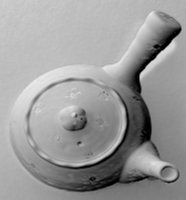 |
Given the refined normal on each pixel, it can be transferred to gradient by the following:
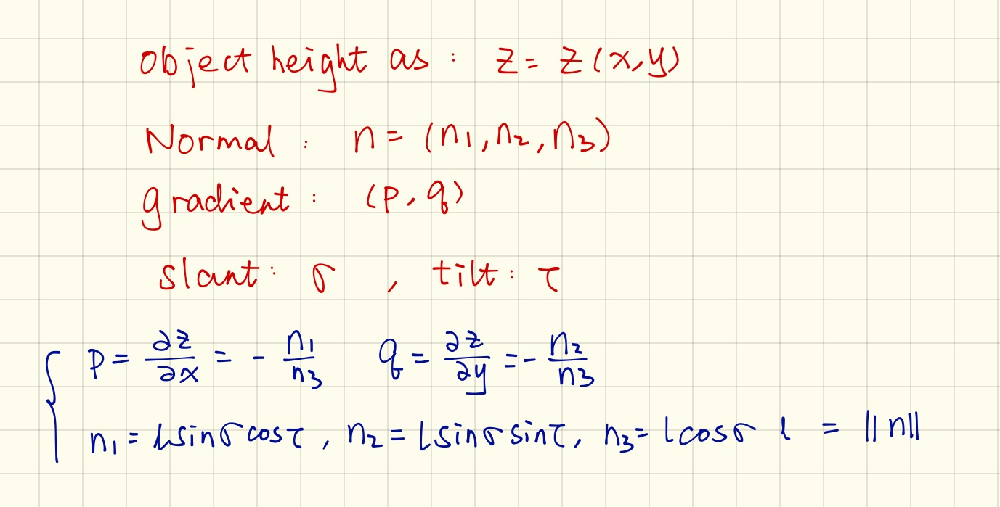
After get the slant and tilt, reconstruct the surface using shapeletsurf.m from Peter Kovesi's library. The denominator image is used as texture for the model. An example is shown below.
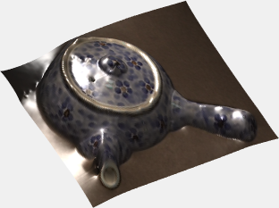
| Denominator Image | Initial Normal | Refined Normal | 3D Model | Textured 3D Model |
| |
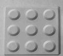 | 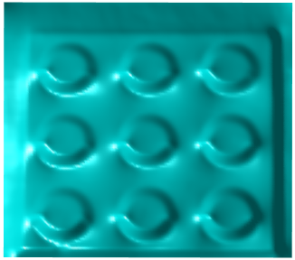 | |
|
| 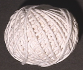 | 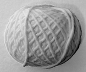 | 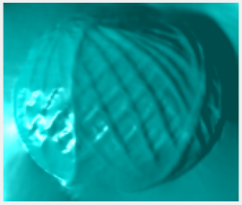 | 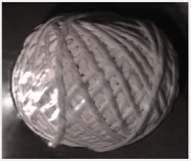 | |
| 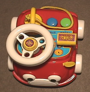 | 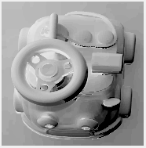 | 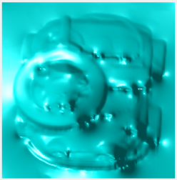 | 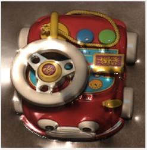 | |
| 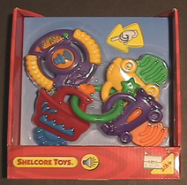 | 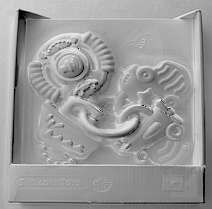 | 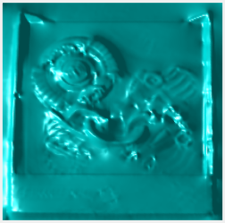 | 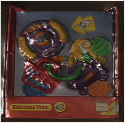 | |
| 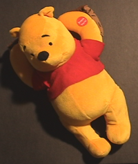 | 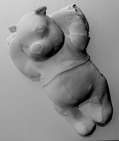 | |
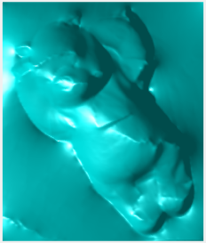 | 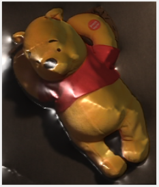 |
The END